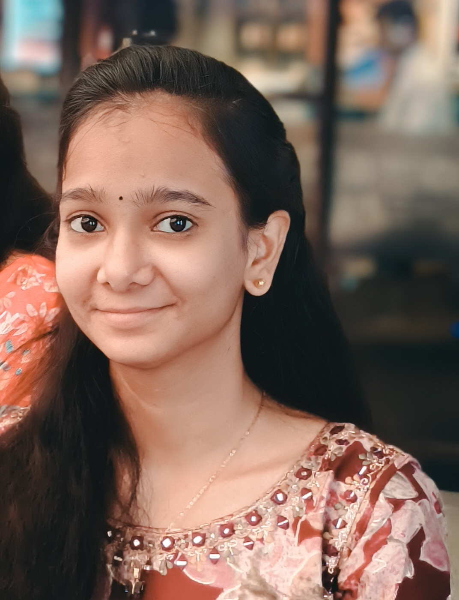

Hi, I'm
Sai Lakshmi
Aspiring Java Full Stack Developer
Computer Science undergraduate passionate about building practical, user-friendly web applications with Java, SQL, JavaScript and modern development tools.

Sai Lakshmi Vedurupaka
B.Tech CSE • Expected 2027
Building skills for real-world software development.
A concise look at my academic background, strengths and current direction.
About Me
I am a B.Tech Computer Science student at Ideal Institute of Technology with a strong interest in Java Full Stack Development. I enjoy turning ideas into simple, useful web applications and continuously improving my programming and problem-solving skills.
My current foundation includes Java, SQL, HTML, CSS and JavaScript, with hands-on experience building a College Event Management System using Firebase.
Current Focus
- Core Java and object-oriented programming
- DSA and placement-oriented problem solving
- SQL and database problem solving
- Full-stack web development
- Building stronger projects for placements
- Improving GitHub and coding profile presence
Technical abilities & toolkit
Technologies and academic foundations from my current resume.
Programming & Web
Database
Development Tools
Academic Coursework
Certifications & achievements
Credentials that support my technical learning and placement preparation.
Introduction to Internet of Things
Certification demonstrating academic exposure to Internet of Things concepts.
Verify Certificate →Google AI/ML Virtual Internship
Virtual internship focused on foundational AI and machine learning learning.
View Certificate →Java Full Stack Developer Virtual Internship
Virtual internship aligned with full-stack development and Java technologies.
View Certificate →HackerRank 4-Star Badges
Earned 4-Star badges in both Problem Solving and SQL, demonstrating consistent coding and database practice.
View Profile →College Event Management System
A practical web application built to simplify college event creation, registration and event-wise data management.
College Event Management System
Developed a web-based system with separate participant and admin flows for managing college events and registrations.
- Built event creation, viewing, deletion and registration management features.
- Implemented an admin-based Manage Events module.
- Used Firebase Firestore for persistent participant and event data.
- Deployed the application using Firebase Hosting and used GitHub for version control.
My academic & development path
A simple timeline showing how my current skills and projects have developed.
B.Tech in Computer Science
Completing B.Tech in Computer Science at Ideal Institute of Technology with a current CGPA of 8.5/10.
Java Full Stack & Placement Preparation
Strengthening Core Java, SQL, DSA, web development and interview-focused problem solving while preparing for software roles.
Projects, Internships & Certifications
Built the College Event Management System and completed NPTEL, Google AI/ML and Java Full Stack virtual learning experiences.
Started B.Tech CSE
Began undergraduate studies and developed foundations in programming, OOP, databases and computer science coursework.
Let's connect & collaborate.
I'm open to internships, placement opportunities and opportunities to build useful software.
Have an opportunity?
If you'd like to discuss a role, project or collaboration, feel free to reach out.